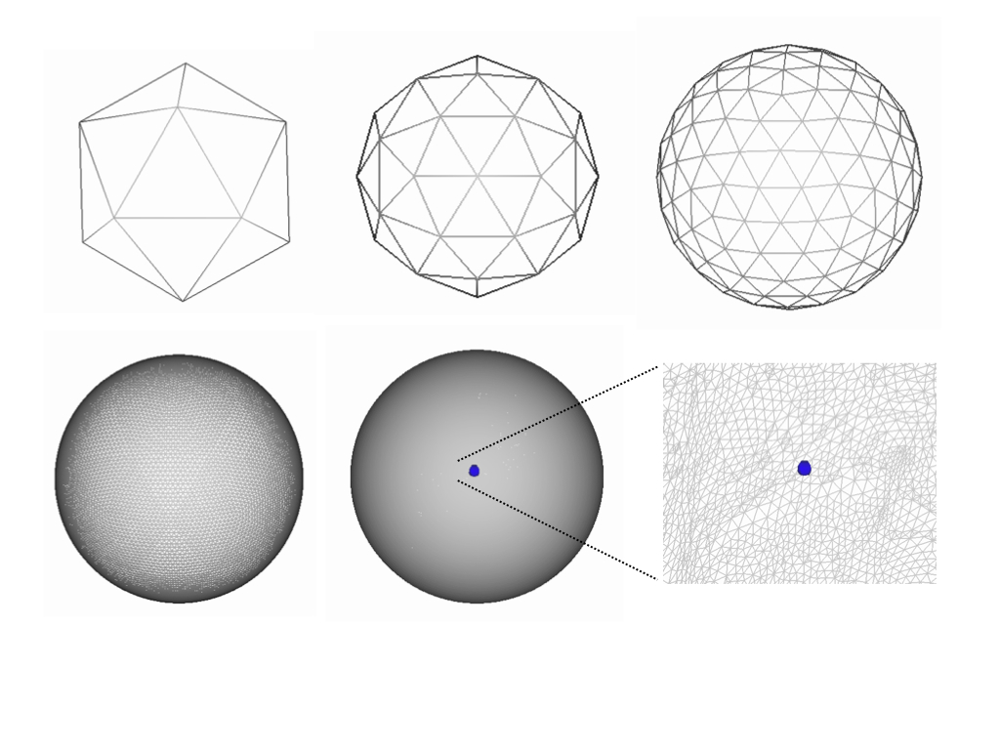

Contents
- Introduction
- User Guide
Getting started
Prior to running MSM you will need to have passed your data through a surface extraction and inflation pipeline such as FreeSurfer, or the HCP minimal processing pipeline. This is because, if MSM is to work for your data you must have cortical surface meshes that have been mapped to the sphere. In addition, you will require a data file for each mesh, where the data may be scalar (such as sulcal depth, curvature or myelin features) or multivariate (RSNs or fMRI task maps).
Data can be supplied as GIFTI (.func.gii or .shape.gii), ASCII (.asc) files, or as a simple text file (with '.txt' extension) provided the text file has as many columns as there are mesh vertices. Surface files may be supplied as GIFTI (surf.gii) or ASCII (.asc). In general the key files required to run MSM are the:
input mesh - otherwise known as the "source" or "moving" mesh. This will be the mesh that is deformed during the registration.
reference mesh - otherwise the "target" or "fixed" mesh. This represents the surface you would like the source data to be deformed to most resemble. In some cases, for example if source and target data have both been resampled onto a population average surface (such as the HCP FS_LR164k or FS_LR32k average surface) it will be sufficient to just supply an input mesh.
input data - the data file associated with the input mesh. This must therefore have as many data points as there are surface mesh vertices.
reference data - the data file associated with the referenced mesh.
Examples of the most basic types of call to msm (using these inputs):
A. msm --inmesh=input_mesh.surf.gii --refmesh=ref_mesh.surf.gii --indata=in_data.func.gii --refdata=ref_data.func.gii -o ~/mydirname/L.
B. msm --inmesh=average.sphere.FSLR32K.surf.gii --indata=in_data.func.gii --refdata=ref_data.func.gii -o ~/mydirname/L.
Where this assumes you are calling msm from the directory where the data exists. The final option (-o) is the stem of the path where you wish to output your data; we suggest ~/mydirname/L. or ~/mydirname/R. as an example of how you can input left and right hemisphere results into the same directory. Case B shows an example of how, when both datasets have been resampled to a population average surface (such as the HCP's 32k FS_LR surface), it is possible to enter just the average sphere as the input mesh.
MSM Output
The most relevant outputs of MSM are:
~/mydirname/L.sphere.reg.surf.gii - the warped input mesh (i.e., new vertex locations - this capture the warp field, much like a *_warp.nii.gz file would for volumetric warps created by FNIRT). Note that the output name is highlighted in bold, with the example output path used as a prefix.
~/mydirname/L.sphere.LR.reg.surf.gii - this is a downsampled version of the above warp where the resolution of this mesh will be equivalent to the resolution of the final datamesh (see configuration files ). This can be used for warping new meshes through the transformation (see section on transformation).
~/mydirname/L.resampledandprojected.func.gii - the input data passed through the MSM warp and projected onto the target surface (useful for vertex-wise comparison with the target).
where GIFTI outputs are used here only as examples. The program also supports output as ASCII and VTK using the command line option -f.
Template Spaces
For cortical surface alignment it is common practice to align to a population average template space. For adults there are two prominent examples: the FreeSurfer fsaverage mesh and the FS_LR164k and FS_LR32k spaces for the HCP. The FS_LR164k population average space (see here for more details) is based upon fsaverage but has right and left vertex equivalence (it is symmetric). The FS_LR32k surface is a downsampled version of this for f/dMRI processing.
An important point to note about the HCP average space is that the process used to achieve symmetry generates a mesh space rotated with respect to the fsaverage and native mesh spaces. To account for this the HCP have introduced a rotated native sphere called sphere.rot.native.surf.gii. Therefore, by example for some subject 'BOB' using HCP notation in directory /path/to/mystudy/:
/path/to/mystudy/BOB/MNINonLinear/ - respresents files resampled to 164k average space
/path/to/mystudy/BOB/MNINonLinear/fsaverage_LR32K/ - represents files resampled to the 32k average space;
/path/to/mystudy/BOB/MNINonLinear/Native - represents and all files relating to the subjects original 'native' mesh. In other words the meshes directly extracted from each subjects structural image.
In each subject's Native space there will be several spherical mesh representations. Using left as an example, these three meshes will be important for any further processing:
/path/to/mystudy/BOB/MNINonLinear/Native/BOB.L.sphere.native.surf.gii - this is the mesh obtained from projecting the subject's native white matter mesh to a sphere using FreeSurfer
/path/to/mystudy/BOB/MNINonLinear/Native/BOB.L.sphere.rot.native.surf.gii - this is the result of correcting for the rotation between the FS_LR and native spaces
/path/to/mystudy/BOB/MNINonLinear/Native/BOB.L.sphere.MSMSulc.native.surf.gii - this is the result of aligning the native surface to FS_LR using HCP protocol for constrained MSM alignment of cortical folding (sulcal depth) to a group template
/path/to/mystudy/BOB/MNINonLinear/Native/BOB.L.sphere.MSMall.native.surf.gii - this is the result of aligning the native surface to FS_LR using HCP protocol for serial alignment of folding, myelin and rfMRI to a group template
The important thing to take away here is that the HCP provides spheres aligned using MSM, with cortical folding as the features that drive the alignment. But, as the goal of the HCP is fMRI alignment this is highly constrained. This means the regularisation is strong (see configuration files ). Therefore users may wish to define their own MSMSulc alignment. For this they must use the L.sphere.rot.native.surf.gii as the input mesh. There are also two more spheres that represent FreeSurfer alignment:
/path/to/mystudy/BOB/MNINonLinear/Native/BOB.L.sphere.reg.native.surf.gii - This is the results of aligning the native sphere to fsaverage using FreeSurfer
/path/to/mystudy/BOB/MNINonLinear/Native/BOB.L.sphere.reg.reg_LR.native.surf.gii - This is the results of transforming BOB.L.sphere.reg.native.surf.gii to the FS_LR space using CARET software
These should not be required, other than for comparisons of results to FreeSurfer-based processing pipelines.
Advanced Command Line Features
In addition to the required inputs to msm, there are several useful options. The most important of these is the --conf call that allows users to supply a configuration file which modifies key parameters of the registration. For optimal running of the registration a configuration file should be supplied (parameters are described in more detail below).
Combining Warps
Another very useful feature is the --trans option. This allows users to specify the output mesh from a previous registration stage. For example, if you wished to initialise registration of some other Native space features (such as myelin maps) by first aligning coarse folding structure using sulcal maps (as performed in our NeuroImage paper), you could run registration in two stages as:
Step 1: msm --inmesh=input_mesh.surf.gii --refmesh=ref_mesh.surf.gii --indata=in_SULC_data.func.gii --refdata=ref_SULC_data.func.gii --conf=myconfigSULC -o ~/mySULCdirname/L.
Step 2: msm --inmesh=input_mesh.surf.gii --trans=~/mySULCdirname/L.sphere.reg.surf.gii --refmesh=ref_mesh.surf.gii --indata=in_myelin_data.func.gii --refdata=ref_myelin_data.func.gii --conf=myconfmyelin -o ~/myMyelindirname/L.
Running registration in this way, rather than simply taking the output from the sulc registration and using it as an input mesh for the RSN registration, allows distortions for all the stages combined (e.g. sulc + myelin here) to be penalised during alignment.
Combining warps of different resolutions
Sometimes the warps you wish to combine are defined on different mesh resolutions, and or the data used to drive the registration has been downsampled to a template mesh. This is common within the HCP when working with functional or diffusion data, which is aligned using MSMsulc and MSMall protocols, then resampled to the FS_LR32k mesh. In these instances it is possible to combine these warps using the --inregister option. In this instance, we can rewrite Step 2 above to include the HCP standard Sulc registration /path/to/mystudy/BOB/MNINonLinear/Native/BOB.L.sphere.MSMSulc.native.surf.gii and we can incorporate the corresponding template mesh (/path/to/mystudy/BOB/MNINonLinear/fsaverage_LR32K/BOB.L.sphere.32k_fs_LR.surf.gii) in the following way:
Step 2: msm --inmesh=input_mesh.surf.gii --trans=/path/to/mystudy/BOB/MNINonLinear/Native/BOB.L.sphere.MSMSulc.native.surf.gii --inregister=/path/to/mystudy/BOB/MNINonLinear/fsaverage_LR32K/BOB.L.sphere.32k_fs_LR.surf.gii --refmesh=ref_mesh.surf.gii --indata=in_RSN_32kdata.func.gii --refdata=ref_RSN_32kdata.func.gii --conf=myconfRSN -o ~/myRSNdirname/L.
File Formats
The output file format is controlled by the -f/--format option and the options are: GIFTI (surfaces are saved as .surf.gii and data as .func.gii); ASCII (surfaces are saved as .asc and data is saved as .dpv); ASCII_MAT (surfaces are saved as .asc and data is saved as a simple matrix in a textfile .txt); VTK (surfaces as .vtk and data as .txt). For more details on the .dpv format (which is FreeSurfer compatible, but differentiates surface from data files) please see the following blog post: http://brainder.org/2011/09/25/braindering-with-ascii-files/
Costfunction Weighting
Costfunction weighting (CFw) can be controlled using --inweight and --refweight options. This allows you to supply a weighting mask for each of your source and reference meshes, although it is possible to run msm with only one. The CFw masks can be multivariate which allows you to vary the contribution of different features. For example in the "Multimodal alignment" section of our paper we use a single, multivariate CFw mask created on our template image (and therefore passed as a --refweight option) to vary the contribution of our different modalities to the registration.
Resolution and Smoothing
Two final useful parameters are --levels which allows you to control the number of resolution levels run during the course of the registration e.g. --levels=2. This supersedes the settings in the configuration file. Finally --smoothout controls the smoothing of the data after projection to the template image. By default the registration uses adaptive barycentric resampling (reference). However, this option will allow the user to smooth using a gaussian kernel with an input parameter equal to the standard deviation.
Example
Therefore, with all command line parameters used an msm call might look like this:
msm --inmesh=input_mesh.surf.gii --trans=~/mySULCdirname/L.sphere.reg.surf.gii --refmesh=ref_mesh.surf.gii --indata=in_RSN_data.func.gii --refdata=ref_RSN_data.func.gii --inweight=in_weight_RSN.func.gii --refweight=ref_weight_RSN.gii --levels=2 --smoothout=2 --conf=myconfRSN -o ~/myRSNdirname/L.
This will repeat Step 2 above, but this time each of the meshes will have a corresponding weighting function supplied in the form of a GIFTI func.gii (but this could also be shape.gii, .asc or as matrix in a text file); the output of the registration will also be smoothed using a kernel of standard deviation 2. The registration will be stopped after two cycles or registration levels irrespective of the number of levels specified in the configuration file.
Configuration Files
Configuration files modify all tunable parameters of the registration. For a full list of all registration parameters you can enter:
msm -p
Some parameters require inputs for every stage of the registration, and are input as comma separated lists e.g. --lambda=0,0.1,0.2,0.3 (for four levels). These are:
--lambda weights the contribution of the regulariser relative to the similarity force.
--opt selects the optimisation approach. Choice of: AFFINE or DISCRETE (default)
--simval selects the similarity measure for each stage of the registration. There is a choice of 1) SSD; 2) correlation (default); 3) NMI; 5) alpha entropy (only for multivariate data). SSD is enforced for affine alignment. For discrete optimisation we strongly recommend correlation for all datasets. The current implementations of SSD and NMI do not in general work well in the discrete case, and we do not advise using them.
--it controls the number of iterations at each resolution. In general affine registration will require in excess of 30 iterations. Discrete optimisation will converge after 5-10 iterations.
--sigma_in sets the input smoothing: this changes the smoothing kernel's standard deviation (default --sigma_in=2,2,2, but for very noisy data we suggest you smooth more)
--sigma_ref sets the reference smoothing: the values are equal to sigma_in by default, but you could smooth the reference less than the input if you are using an average template.
--datagrid in MSM data is typically downsampled from the high resolution surfaces input_mesh and reference_mesh onto a regular (equally spaced vertex) grid. This speeds up the running of MSM without appreciably downgrading the quality of the alignment. These grids are formed from subdivision of a icosahedron and are coded in terms of the number of resamplings performed. For datagrids we typically we use 10K grids, which have code 5.
--CPgrid the Control Point (CP) Grid is a low resolution mesh that controls the warp of the input mesh to the reference. At each iteration of the registration, the CP Grid can undergo one of a discrete set of deformations, where end points are defined by points on the sampling grid. By default the first level of the discrete optimisation is started with a 162 vertex grid (code 2) and this is increased by one for each level.
--SGgrid the Sampling Grid resolution determines the maximum number of discrete deformations available to each CP and thus the maximum possible accuracy of the registration at that stage of the registration. It is set 2 levels higher than the CP resolution by default.
Other parameters need only be specified once:
--excl tells MSM to ignore an 'exclusion' region; defined by thresholding (the intensity range provided by the cut threshold below)
--cutthr controls the exclusion region, which is defined for all intensities between a certain intensity range. It needs two values as upper and lower thresholds for defining cut vertices. As it is usually used to mask the cut on the medial wall (which is zero valued) these values are typically --cutthr=0,0.0001
--log selects the log transform to normalise the data
--IN used to normalize the intensity range of the target to that of the input data using histogram matching
--VN used to variance normalize data the input and target featuresets
We supply a series of configuration files, each tuned to work with different (sulcal depth, myelin, and RSN) data. An example of the sulcal depth config file (which also forms the default parameterisation in the absence of any supplied configuration file) is:
--simval=1,2,2,2
--sigma_in=4,4,2,1
--sigma_ref=2,2,1,1
--lambda=0,0.1,0.2,0.3
--it=50,3,3,3
--opt=AFFINE,DISCRETE,DISCRETE,DISCRETE
--CPgrid=0,2,3,4
--SGgrid=0,4,5,6
--datagrid=4,4,5,6
--IN
The comma separated lists above represent parameters per level, and the number of resolution levels run by msm can be controlled by the length of the lists specified here. Registration may also be initialised using an affine alignment step, run as an additional level at the beginning. Therefore, the above case is stating that the registration should run one affine step using: SSD as a similarity measure, 50 iterations, input mesh smoothing 4mm, reference mesh smoothing 2mm, on a data grid of resolution 2562 vertices; Following this discrete optimisation is run over 3 levels with 3 iterations at each level, using control point grid resolutions 162, 642, and 2562, where the sampling grid resolution is 2 subdivisions above this, and the data grids have resolution: 2562, 10242 and 40962 vertices. Smoothing is applied to the source image as 4, 2, then 1mm sigma smoothing kernels, and to the reference image as 2, 1 and 1mmm smoothing. --IN indicates that the source intensity distribution is matched to the target intensity distribution, once at the beginning of the registration.
If you choose to edit or optimise the config files then it is important to remember that all multiresolution level parameter lists must have the same length, else the program will throw the following error:
MeshREG ERROR:: config file parameter list lengths are inconsistent
In addition, as affine registration only implements the following parameters: --opt, --simval, --it, --sigma_in, --sigma_ref, --IN, --VN, --scale, --excl, for all other multi level parameters, it is necessary to supply a zero value for the AFFINE stage.
Regular Mesh Surfaces
The number of faces in an icosahedron is 20 and subsampling this gives rise to high resolution representations of a sphere that are used for controlling the grid spacing. Serial subsampling leads to polyhedra with the following number of faces: 42, 162, 642, 2562, 10242, 40962. These correspond to the codes: 1, 2, 3, 4, 5, 6. Below are examples of codes 0 (icosahedron), 1 and 2 in the first row and 4 and 5 in the second row.

Scripts
Post Processing
Transforming Unseen Data
In msm a warp or deformation field is prescribed by two meshes representing the start and end point of a transformation. For example, using the common syntax of this user guide, the warp for the left hemisphere is between the input_mesh.surf.gii and L.sphere.reg.surf.gii. These represent the same data, so have the same number of vertices and vertex numbers correspond. Therefore, the change in coordinates from the input_mesh to sphere.reg tells us where each vertex on the input_mesh has to move so as to optimise overlap of the input and reference data. Nevertheless, the warp alone is not sufficient to enable direct comparisons between the alignment of the input and reference featurespace (i.e. sulc/myelin/RSN maps) following alignment. To achieve this it is also necessary to resample the input features onto the reference mesh surface. This will take the features for each input mesh vertex and project them onto to the reference mesh at their new location i.e. according to L.sphere.reg.surf.gii. MSM generates the resampling of the input data automatically as L.transformed_and_reprojected.func.gii. However, if you wish to project new data through this transformation i.e. project myelin or RSN data through a sulc transformation the following functions will be necessary:
Two functions are supplied for the warping and resampling of unseen data:
msmapplywarp: of spheres
- This function allows you to pass meshes through a transformation prescribed for another surface. For example, if we passed MSM a low resolution approximation to our input_mesh (input_meshLR.surf.gii), and got a mesh input_meshLR.sphere.reg.surf.gii out of the registration, we could upsample this warp to the original mesh by applying:
msmapplywarp input_mesh.surf.gii input_mesh.sphere.reg.gii -original input_meshLR.surf.gii -deformed input_meshLR.sphere.reg.surf.gii
This can be useful for HCP data where fMRI data is resampled onto the low resolution 32k_FS_LR mesh, but other data lies on the high resolution 164k_FS_LR surface. It will assume that the starting point of the deformation is given by the un-deformed icosphere equivalent to input_meshLR.sphere.reg.surf.gii. However it is important to make sure with this formulation that the to-be-deformed mesh (input_mesh.surf.gii here) was in alignment with the input mesh used in the call to MSM that produces the warp input_meshLR.sphere.reg.surf.gii
msmapplywarp: of anat
- It is also possible to warp anatomical meshes (the white, pial, midthickness and inflated surfaces) through an MSM. This is, in effect, a resampling of the input anatomical surfaces onto the reference anatomy, using the spherical warp to determine the correspondences. We could therefore project the input white surface through the MSM warp by applying:
. msmapplywarp input_mesh.sphere.reg.gii output_deformed_white.surf.gii -anat target_sphere.surf.gii target_white.surf.gii
Here the input_mesh.sphere.reg.gii is the deformed sphere output from MSM and the output_deformed_white.surf.gii will be the projection of this defomred sphere onto the target white surface
msmresample:
- This is a function for resampling data following an msm warp. Generally it is best to using adaptive barycentric resolution (ref), if no smoothing is required ,or gaussian otherwise. If neither resampling option is provided nearest neighbour interpolation is used An example call:
msmresample input_mesh.sphere.reg.gii output_metric_basename -labels input_metric.func.gii -project target_mesh.surf,gii -adap_bary
Where output_metric_basename refers to the desired output name without the file ending (i.e. .func.gii)
Important Options
-project - target surface data will be projected onto (requires argument)
-labels - load data file for resampling (including .txt, .asc, .func. and .shape formats, requires argument)
-gaussian - gaussian interpolation kernel with std deviation X (requires argument)
-adap_bary - use adaptive barycentric interpolation
-barycentric - use adaptive barycentric interpolation
-excl exclude the area of the cut from contributing to the resampling
-normalize normalize intensity range to target (requires argument)
Estimating metric distortion
It is also possible to estimate the strength of the deformation in terms of how it distorts the input mesh. This can be estimated in terms of the areal distortion, or log2(A2/A1) where A1 and A2 represent mesh face areas before and after projection, respectively. Per Vertex values are taken by weighted averaging of the distortions for every mesh face connected to each vertex. Areal distortions can be estimated as:
. estimate_metric_distortion input_mesh.surf.gii input_mesh.sphere.reg.gii distortion_basename
In general it is undesirable for areal distortions to exceed 2 or more (four fold expansion)
References
M.F. Glasser, S.N. Sotiropoulos, J.A. Wilson, T.S. Coalson, B. Fischl, J.L. Andersson, J. Xu, S. Jbabdi, M. Webster, J. R. Polimeni, D.C. Van Essen, M. Jenkinson, The minimal preprocessing pipelines for the Human Connectome Project, NeuroImage, Volume 80, 15 October 2013, Pages 105-124, ISSN 1053-8119, http://dx.doi.org/10.1016/j.neuroimage.2013.04.127.
* --aKNN sets the number of k-nearest neighbours used for estimation of similarity graph used during calculation of the alpha entropy measure (default 5). * --mInt controls the method used for interpolation of the warp from the control point grid to the input mesh, options: Thin Plate Spline (TPS) or barycentric (BARY). Although TPS was used in the paper, it has since been found that barycentric interpolation is more stable to large distortions.